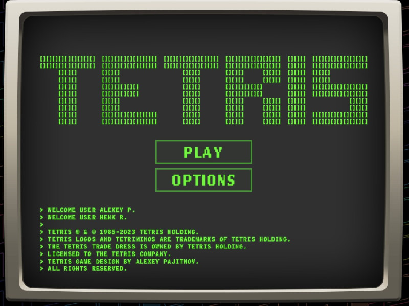

What is tetris?
Tetris is a tile-matching puzzle video game originally designed and programmed by Russian software engineer Alexey Pajitnov in 1984. It has since become one of the most popular and enduring video games of all time, appearing on nearly every gaming platform available. The rules of Tetris are simple yet its gameplay can be deeply strategic, challenging, and addictive.
Gameplay
The main objective of Tetris is to score as many points as possible by clearing horizontal lines of Blocks. The player does this by manipulating pieces, each made up of four squares, known as Tetriminos, which descend from the top of the playing field.
This is just a project
I made this project for the propose of demostrating my skills at web delevopment
Players move the descending Tetriminos left or right, rotate them 90 degrees clockwise or counter-clockwise, and accelerate their descent to the bottom of the playfield. Some versions also allow a "hard drop" which instantly places the Tetrimino at the bottom of the playfield.
Keyboard
Tactil
Dualshock 4